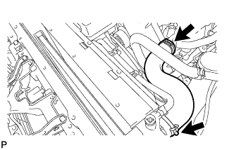
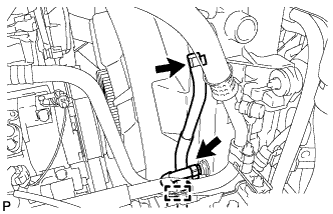

ПЕРЕДНИЙ САЛЬНИК КОЛЕНЧАТОГО ВАЛА > СНЯТИЕ |
| 1. СНИМИТЕ НИЖНЮЮ ОБЛИЦОВКУ ПЕРЕДНЕГО БАМПЕРА |
Освободите фиксатор, выверните 5 болтов и снимите нижнюю накладку переднего бампера.
| 2. СНИМИТЕ ЗАЩИТУ КАРТЕРА ДВИГАТЕЛЯ № 1 В СБОРЕ |
Выверните 4 болта и снимите защиту картера двигателя № 1.
| 3. СЛЕЙТЕ ОХЛАЖДАЮЩУЮ ЖИДКОСТЬ ДВИГАТЕЛЯ |
Ослабьте пробку сливного крана радиатора.
 |
Слейте охлаждающую жидкость, сняв пробку расширительного бачка, а затем с помощью ключа снимите вентиляционную пробку.
Ослабьте пробку сливного крана блока цилиндров.

| *1 | Бачок радиатора | *2 | Вентиляционная пробка |
| *3 | Пробка сливного крана радиатора | *4 | Пробка сливного крана блока цилиндров |
| 4. СНИМИТЕ ПАТРУБОК РАДИАТОРА № 1 |
|  |
| 5. СНИМИТЕ КОЖУХ ВЕНТИЛЯТОРА |
 |
Отсоедините перепускной шланг охлаждающей жидкости № 1, отсоедините 2 зажима от кожуха вентилятора.
Отсоедините перепускной шланг охлаждающей жидкости № 2 от расширительного бачка радиатора.
Выверните 3 болта и снимите расширительный бачок радиатора.
Для моделей с автоматической трансмиссией:
|  |
Отсоедините впускной и выпускной патрубки масляного радиатора и открепите зажим от кожуха вентилятора.
Отсоедините от радиатора 2 патрубка масляного радиатора.
 |
Ослабьте 4 гайки, крепящие вентилятор с вискомуфтой.
Снимите поликлиновой ремень вентилятора и генератора (Нажмите здесь).
 |
Выверните 2 болта, крепящие кожух вентилятора.
Отверните 4 гайки вентилятора с вискомуфтой, а затем снимите кожух вместе с вентилятором с вискомуфтой.
Отсоедините перепускной шланг охлаждающей жидкости № 2 от зажима шланга на кожухе вентилятора.
 |
Отсоедините перепускной шланг охлаждающей жидкости № 2 от впускного патрубка охлаждающей жидкости.
Снимите шкив вентилятора с насоса системы охлаждения.
| 6. СНИМИТЕ КРЫШКУ ШКИВА КОЛЕНЧАТОГО ВАЛА (для моделей с DPF) |
Выверните 2 болта и снимите крышку шкива коленчатого вала.
| 7. СНИМИТЕ ШКИВ КОЛЕНЧАТОГО ВАЛА |
 |
Используя SST, зафиксируйте шкив коленчатого вала и ослабьте болт шкива.
 |
С помощью SST выверните болт шкива и снимите шкив коленчатого вала.
| 8. СНИМИТЕ ПЕРЕДНИЙ САЛЬНИК КОЛЕНЧАТОГО ВАЛА |
С помощью SST снимите передний сальник коленчатого вала.